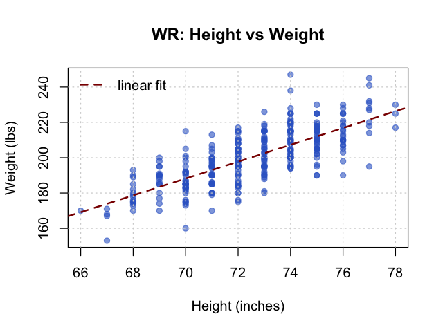
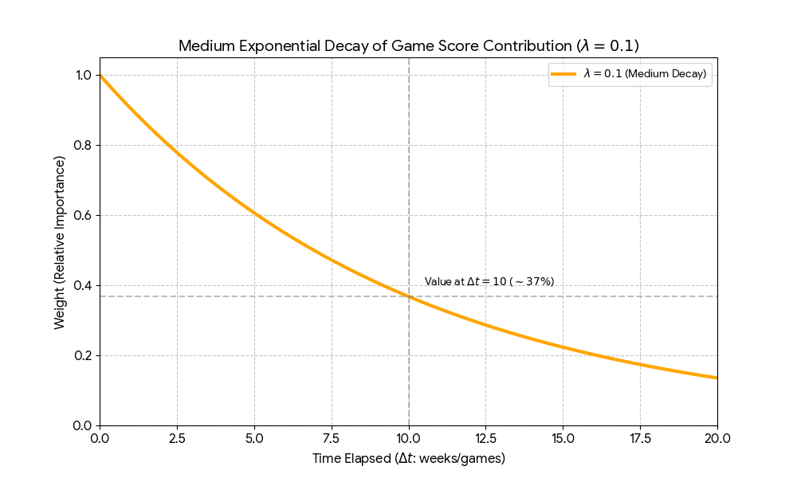
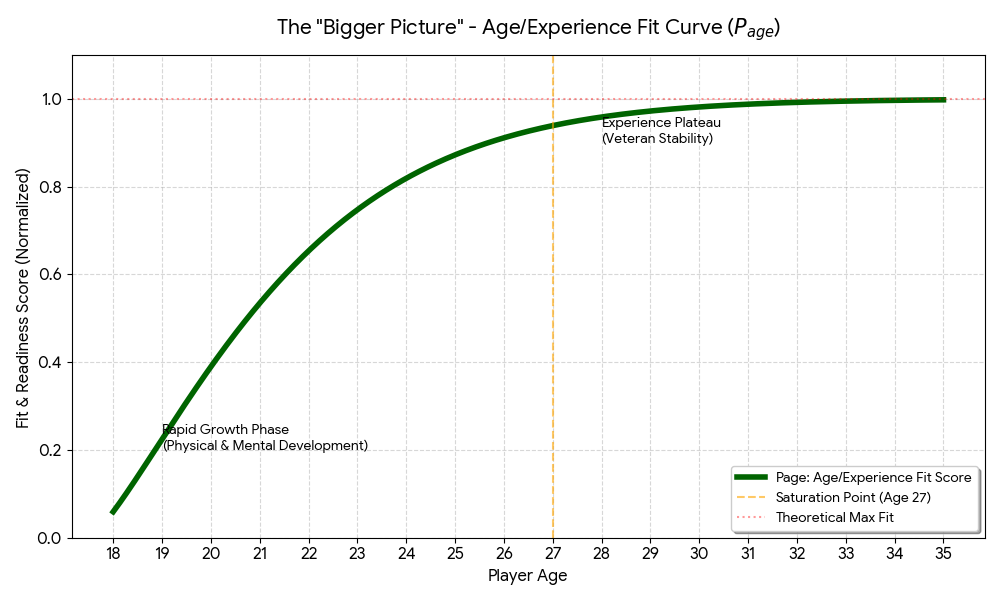

Portal
PortalHow We Calculate Overall Rankings
Each player is assigned a composite score from: physical fit (height/weight), high school recruiting profile, college production, college efficiency/performance, age, games played (availability), and injury reliability. A dynamic weight w blends high school vs. college: (1 − w) multiplies the high school score, w multiplies the college performance score, and w increases as the player logs more current-season games.
Final formula (Wide Receiver example)
FinalScoreWR = 0.15 Pphys + (1 − w) 0.30 Phs + 0.20 Pstats + w 0.30 Pperf + 0.10 Page + 0.15 Pgames + 0.10 Pinjury
Dynamic weight w
Let GPcurr be current-season games played. Then:
w = 1 − e−GPcurr/G0, 0 ≤ w ≤ 1
Early season (few games): w is small, so high school profile matters more. Mid/late season (more games): w grows, so college performance matters more.
How each P-score is calculated
All P-scores are scaled to [0, 100]; higher is better.
1) Pphys: Physical fit (height/weight)
We fit a regression Ŵ = β0 + β1H (height H in inches, weight W in lbs) by position. For each player we get predicted weight Ŵ, residual r = Wplayer − Ŵ, standardized z = r/σr, then:

Pphys = 100 · (1 − |z|/2)
Higher Pphys means the player’s build is close to the typical height/weight profile for that position.
2) Phs: High school recruiting score
Pre-college talent signal from class rankings, normalized to 0–100. If r = player’s rank (1 is best) and N = number of ranked players at position:
Phs = 100 · (1 − (r − 1)/(N − 1))
Captures recruiting pedigree and upside before college stats are reliable.
3) Pstats: College production (exponentially decayed)
Volume stats (e.g. receptions, receiving yards, TDs, first downs, explosive catches) normalized by percentiles within position/season. For each period t, we form a production subscore; then we apply exponential decay over time so recent production counts more:

Pstats = Σt e−λstatsΔt Pstats,t / Σt e−λstatsΔt
Recent catches, yards, and TDs matter more than older production.
4) Pperf: College efficiency/performance (exponentially decayed)
Quality over volume: yards per route run, yards per target, catch rate, drop rate (inverted), target share, snap share. Period-level performance subscores are combined with the same exponential decay so recent efficiency matters most.
Pperf = Σt e−λperfΔt Pperf,t / Σt e−λperfΔt
5) Page: Age / experience fit
Increases with age/experience, roughly linear early on, then saturates (e.g. around age 25–27). Modeled with piecewise linear + exponential saturation so experience and readiness are rewarded.

6) Pgames: Games played / availability
Rewards being on the field and reflects confidence in sample size. Combines a linear availability ratio with a saturation term (e.g. 0.6·(100·GP/GPpossible) + 0.4·(100·(1 − e−GP/G1))). More games played ⇒ more trustworthy evaluation.
7) Pinjury: Injury reliability
Health/risk score: higher = lower injury risk. We compute Rinjury from missed-game rate, recurrence flag, and severity, then Pinjury = 100(1 − Rinjury). This separates past availability (Pgames) from future risk outlook.
In the formula, (1 − w)·0.30·Phs gives weight to recruiting early; w·0.30·Pperf gives weight to college efficiency as games accumulate. Production (Pstats) and decay inside Pstats and Pperf ensure recent college evidence is emphasized.